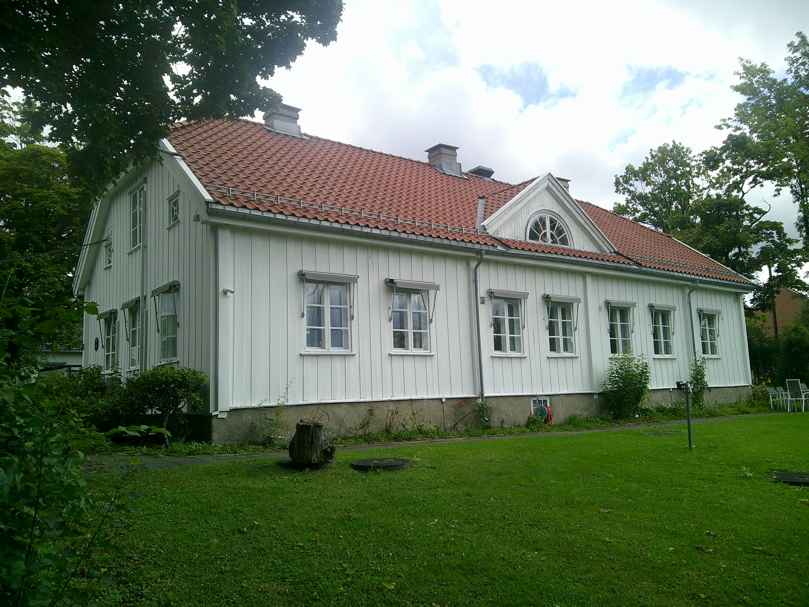
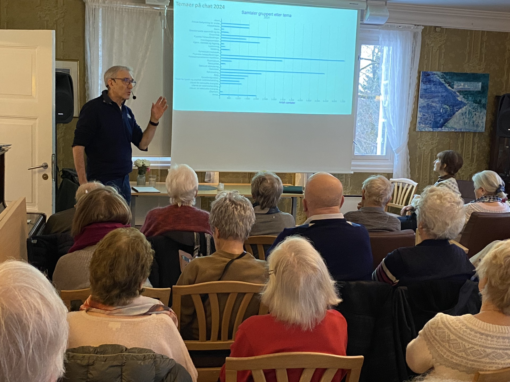

Manglerud Gård seniorakademi
Manglerud Gård Seniorakademi inviterer til samfunnsaktuelle temaforedrag og kåserier.


Om oss
Seniorakademiet holder til på Manglerud Gård, sentralt plassert ved Manglerud T-banestasjon og Manglerud senter.
Foredragene finner sted i storstua på gården, som er et av Østensjø bydels nærmiljøsentre.
Foredragene starter kl. 14.30, vanligvis annenhver tirsdag.
I pausen serveres kaffe, te og noe å spise, før vi avslutter med spørsmål og diskusjon frem til kl. 16.00.
Denne nettsiden fungerer foreløpig best på PC. Mobiltilpasning er under utvikling, og vi jobber med å gi en like god brukeropplevelse på mobil og nettbrett.
Neste arrangement

Geir O. Pedersen 15. september
Aktuelt om midtøsten
Geir O. Pedersen, tidligere norsk FN-ambassadør og FNs spesialutsending i Syria og Midtøsten, gir et skarpt og oppdatert bilde av situasjonen i Midtøsten. Den videre utviklingen frem mot september vil ha stor betydning for hvilke temaer som står sentralt i foredraget.